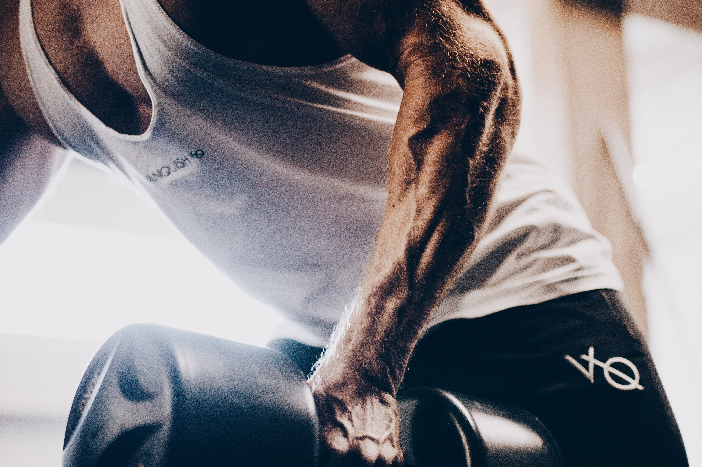

MUSCULAÇÃO
"Mudar não é fácil, mas quando você nota os resultados, nada te faz parar. Quando deixar suas desculpas, encontrará seus resultados."
Tempo de treino: 1h 45min 43s
Média de batimento: 124 bpm
Tempo de descanso: 4 min 48s
Perdas calóricas: 503 kcal